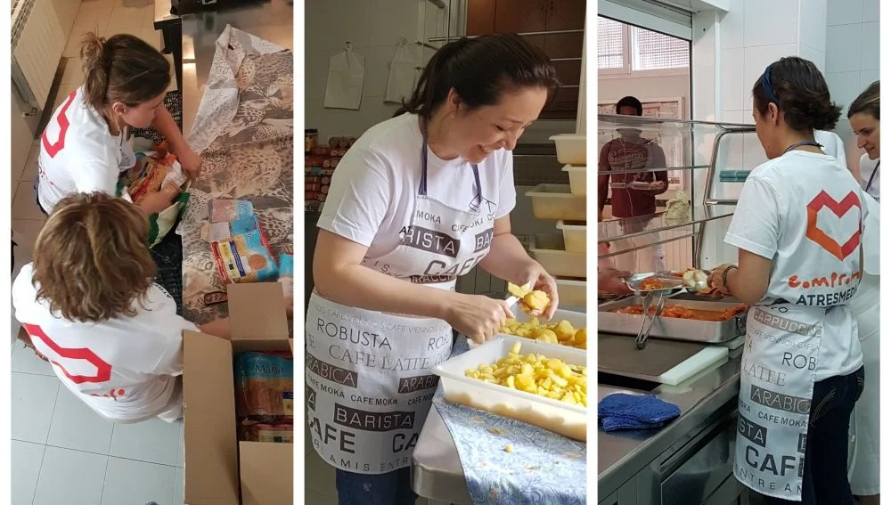
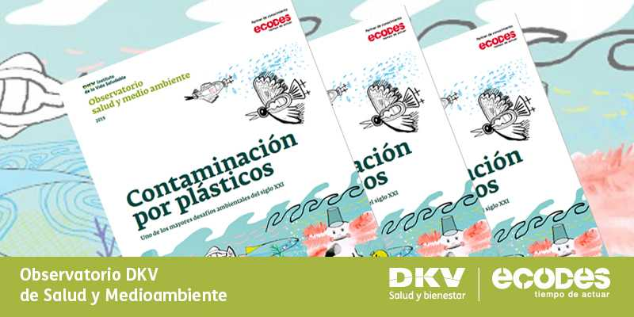

Nuestra Historia
"Aroma de Café" se encuentra en el corazón del País, y ha sido un destino popular para los amantes del café y aquellos que buscan un lugar cálido y acogedor para reunirse con amigos y familiares. Con la creciente conveniencia de la tecnología digital, surge la necesidad de establecer una presencia en línea que refleje nuestra identidad y valores como cafetería.

